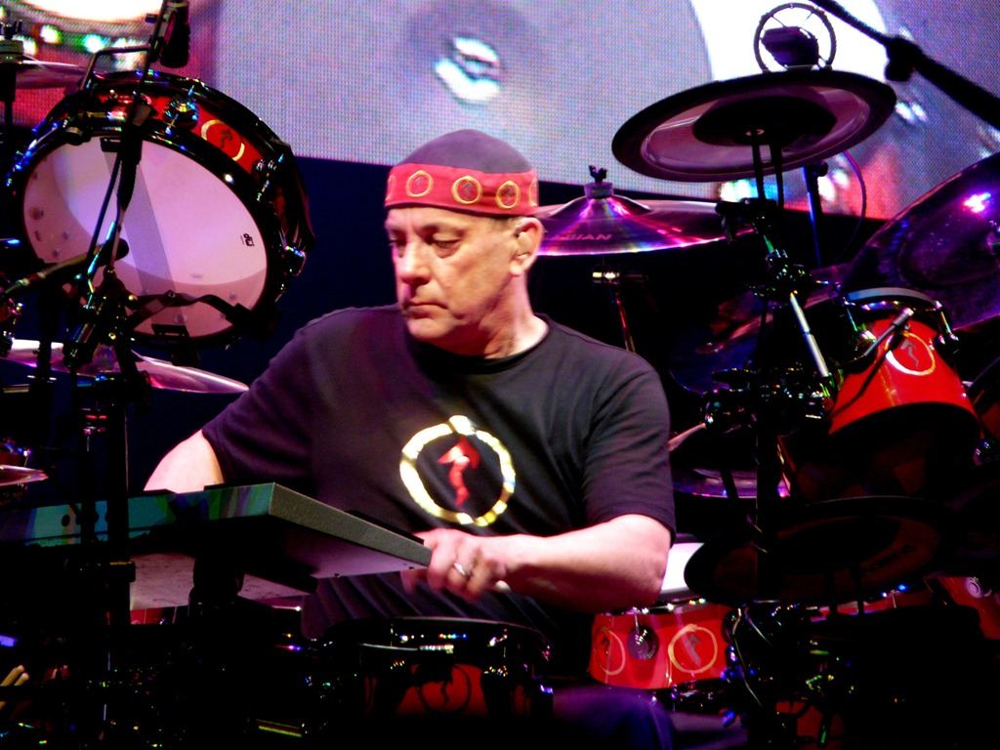
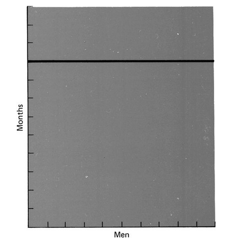
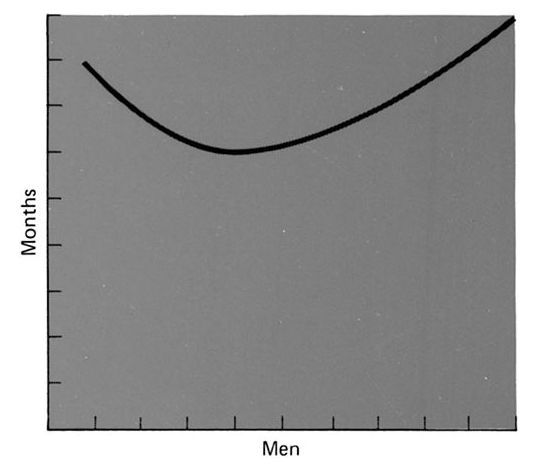
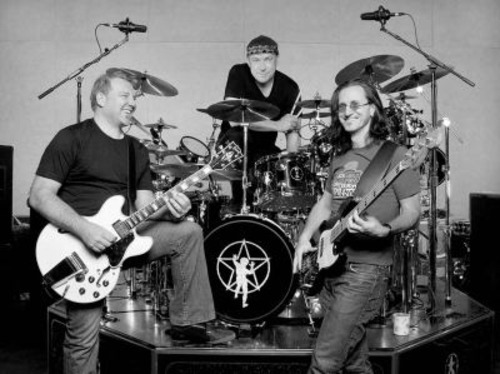

Álbum conceptual
Intro
Time is a gypsy caravan Steals away in the night
En 1997 Rush era una banda exitosa, su baterista, Neil Peart era considerado el mejor del mundo, tanto por sus pares como por la crítica. Pero en ese año, su única hija, de 19 años, muere en un accidente automovilístico, diez meses después su mujer, quien nunca superó la pérdida, fallece afectada de cáncer. Un dolido Neil comunica a sus compañeros que ha decidido tomarse una pausa, para reflexionar, no sabe por cuanto tiempo, toma su motocicleta y parte a recorrer la carretera. El futuro de la banda es incierto.
Estrofa
We will pay the price, But we will not count the cost
Nicholas Taleb nos diría que lo sucedido a Neil Peart es uno de esos eventos desastrosos que impacta profundamente nuestro entorno, algo totalmente impredecible, para lo cual no estamos preparados. Un “Cisne Negro”, tanto para el músico como para la banda, que a partir de este evento sufre un hiato de casi ocho años.
La imagen del cisne negro, introducida en el libro The Black Swan, The Impact of the Highly Improbabble, de Nicholas Taleb, viene del hecho que por muchos años para los naturalistas europeos todos los cisnes era blancos, hasta que uno fue encontrado en Australia. Este concepto ilustra la fragilidad de nuestro conocimiento. Una simple observación invalida una afirmación general sostenida durante milenios tras la observación de millones de cisnes blancos.
En su libro, Taleb introduce el concepto del cisne negro como un evento que tiene tres atributos: primero es una cosa aislada de todas las expectativas regulares, porque nada en el pasado puede convincentemente dar indicios de su posibilidad. Segundo genera un impacto extremo, y en tercer lugar, a pesar de su carácter ajeno, nuestra naturaleza nos hace confeccionar explicaciones de su ocurrencia después del hecho, por lo que lo asimilamos como si fuera algo explicable y predecible.
Riff
Why are we here? Because we're here
Roll the bones
Taleb se auto define como un empirista escéptico, siguiendo la tradición de Montaigne, y sobretodo de David Hume, este autor nos recuerda la vieja máxima de que el pasado no sirve para explicar el futuro. Algo de lo que hemos hablado en “causas imaginadas”. El libro contiene muchos de los temas que hemos tratado acá, lo que no es de extrañar, pues se suma a una lista de textos que están hablando de los mismo: el manejo de la complejidad, la irracionalidad humana, y nuestras limitaciones cognitivas para lidiar con la realidad.
Lo que vamos a ver ahora es si esto aplica en la gestión de proyectos informáticos, porque al parecer tenemos cisnes negros. Lo que viene es una exploración de esta idea, también una respuesta a un post de mi estimado colega Alejandro Barros, con quien hemos sostenido más de alguna discusión sobre la realidad del concepto “crisis del software”, o la deuda en la eficiencia de la gestión de proyectos TI 1 2.
Estribillo
Why does it happen? Because it happens
Roll the bones
Fuimos engañados, por gente que no entendía lo que leía, y montones de libros enseñaban a los ingenieros de software como hacer mal las cosas, “la maldición de la cascada”, recién ahora algunos cuestionan a la peor metodología para desarrollar un proyecto de software que haya existido, pero aún hay gente que espera milagros, chocando con la realidad. “Locura es hacer siempre lo mismo y esperar resultados diferentes”.
Soy un convencido que debemos abandonar “la imagen del software como algo que se construye”. Me resisto a creer que este oficio deba ser asimilado a la construcción civil, o la ingeniería de obras, esa que construye puentes, porque esa visión es la fuente de tanta frustración y confusión.
Puente
Face up! There's still time to turn the game around Face up! – Turn it up
Or turn wild card down
Alejandro nos informa de un artículo llamado Why your IT Project may be riskier than you think.
El tema del artículo es el de siempre, los proyectos TI están condenados, somos pésimos estimando, y nuestros proyectos siempre terminan mal, bueno, no siempre, pero el promedio de costo de los proyectos está por sobre el 27%. Pero las malas noticias son que el 17% de los proyectos TI se transforman en cisnes negros. Lo que los autores del artículo definen como cisnes negros son proyectos que sorpresivamente suben sus costos por sobre el 200%.
Break
Shadows on the road behind Shadows on the road ahead
Nothing can stop you now
Después de su pérdida Neil Peart recorrió 80.000 kilómetros en motocicleta por norteamérica, plasmó sus vivencias en un libro y una canción. El dolor se fue disolviendo en el tiempo, y de repente, mientras visitaba a un amigo en Los Ángeles, éste le presenta a la que terminaría siendo su segunda esposa. Después de esto hace una llamada a sus compañeros para anunciarles que está de vuelta, que quiere volver al estudio a grabar y componer, después de 14 meses Rush vuelve con “Vapor Trails”3.

Sólo
Well, I was only a kid -- didn't know enough to be afraid Played the game, but not the way the big boys played
Nothing to lose -- maybe I had something to trade
No me considero una persona optimista, pero parece que lo soy. No me importan tanto los fracasos como la forma en que se superan. El éxito siempre es aburrido, la ingeniería es aburrida si no se presentan desafíos. Para mi la idea de que la metodología correcta llevará al éxito de los proyectos siempre es reconfortante, pero es pura fantasía, voluntarismo, que nace de no reconocer la naturaleza del desarrollo de software. Lo malo es que no puedes decirle eso a los que ponen el dinero, que esperan que el proyecto salga en el tiempo y el presupuesto. Y ahí está el problema.
Los autores del estudio mencionado arriba afirman haber recogido una muestra global de 1.471 proyectos TI, comparando sus presupuestos y beneficios esperados con los costos y resultados reales. El rango de los proyectos era de del tipo de implantación de sistemas de ERP, CRM y administración de información. El costo promedio de los proyectos fue de 167 millones de dólares, y el más grande de 33 mil millones de dólares. Eran proyectos grandes, varios planeados para ser ejecutados en periodos de varios años. El 92% de los proyecto fue en agencias públicas y el 83% estaba basado en USA. Pero como encontraron poca diferencia entre el 92% de los proyectos públicos con el 8% de los proyectos privados en su muestra, los autores estimaron que el comportamiento es el mismo en el sector privado. ¡Ah!, olvidé mencionar, los autores Bent Flyvbjerg es académico en Oxford, y Alexander Budzierno consultor en McKinsey & Co. y candidato a PhD .
¿Qué puede alegar un (no tan) humilde desarrollador ante tamañas credenciales, y base muestral?
Pues yo creo que mucho. En primer lugar me parece que los autores cometen muchos de los errores que el autor de Black Swan se encarga de destacar en su libro. Sabemos que a fines del 2008, después de la crisis financiera, Taleb era referencia obligada, y muchos han citado su obra sin siquiera hojear la contratapa. Ha habido tantas malas interpretaciones de las ideas de Taleb que el autor decidió escribir un largo apéndice en la segunda edición de su libro:
“El hecho es que muchos investigadores no se dan cuenta inmediatamente de que un Cisne Negro corresponde principalmente a un mapa incompleto del mundo, o que algunos investigadores deben resaltar esta cualidad subjetiva […] lo que nos lleva al problema histórico sobre la definición misma de probabilidad.[…] La noción de que dos personas pueden tener diferentes visiones del mundo, y luego expresarlas como diferentes probabilidades permanece extraña a los investigadores. Así que le ha tomado un tiempo a los científicos aceptar la noción no-Asperguer que diferentes personas pueden, siendo racionales, asignar diferentes probabilidades a diferentes estados futuros del mundo. Esto se llama “probablidad subjetiva”
– Nicholas Taleb, “Probability has to be subjective”, Ensayo postscriptum: Sobre la robustez y fragilidad… Segunda Edición de El Cisne Negro.
En ese párrafo está la clave para entender cuál es el problema con estos análisis, como veremos.
Estribillo
Do we have to be forgiving at last? What else can we do?
Do we have to say goodbye to the past?
Yes I guess we do
No sólo hemos sido engañados, también nos hemos engañados nosotros mismos, hemos sufrido una amnesia imperdonable. Porque sabemos esto desde hace más de 30 años, las falacias de la estimación fueron enunciadas por Brooks en su clásico ensayo The Mythical Man Month. Cometemos errores porque olvidamos el pasado, vivimos como si el desarrollo de software se hubiera inventado ayer, como si todos estos problemas fueran nuevos. Taleb sonríe desde su escepticismo empirista…
Estrofa
I don't believe in destiny Or the guiding hand of fate
But I believe there's a ghost of a chance
A pesar de las objeciones que yo pudiera tener sobre la elección de la muestra, o la metodología del estudio de Flyvbjerg y Budzier, los números están ahí, cuando un proyecto TI se sale de la escala, el costo es muy alto. ¿Por qué pasa eso?
Al principio de su ensayo Brooks cita el menú del Restaurant Antoine de New Orleans:
“La buena cocina toma tiempo. Si le hacemos esperar, es para servirle mejor, y complacerle”
¡Cómo nos hace falta tener la actitud del Chef Antoine! Si negociaramos plazos y costos con la educada inflexibilidad del Chef, Alejandro Barros perdería tanto material para escribir…:wink:
Hace más de 30 años Brooks identificó los problemas con las estimaciones:
-
Optimismo injustificado: los programadores son optimistas. Muchas de las estimaciones parten de la premisa de que todo irá bien. El código es un medio tan maleable que crea un sentido de control absoluto por parte del programador que es engañoso, porque confía que todo depende de su propia capacidad intelectual, de sus propias ideas. Pero nuestras ideas evolucionan, en la medida que entendemos mejor el problema, así que nuestro optimismo es inherentemente injustificado. Y este sentido además cae en la actitud aspelgueriana, de que no depende de nadie más, soy yo y el código ante mi. Todas las demás componentes respetarán la interfaz y no habrán problemas de compatibilidad, o en la infraestructura.
-
La falacia del hombre-mes: se usa la misma unidad en la estimación y en la programación o calendarización del trabajo: el hombre-mes. El costo es el producto de la cantidad hombres por el número de meses, pero el progreso no debe medirse así. “Usar el concepto de hombre-mes como unidad para medir el tamaño de un trabajo es un mito peligroso y engañoso”.
Dice Brooks: “hombres y meses son productos intercambiables solo cuando el trabajo puede ser particionado entre muchos hombres sin comunicación entre ellos. Esto es verdad cuando cosechamos trigo, o recogemos algodón; no es siquiera aproximadamente verdad cuando hablamos de programación de sistemas”.
En el ensayo Brooks introduce varios gráficos que aclaran este problema. El primero nos muestra el tiempo versus el número de trabajadores en tareas que pueden particionarse en forma perfecta (como la cosecha de trigo):

Tiempo versus trabajadores en tareas perfectamente particionables
Si la tarea no se puede dividir (por ejemplo, al depurar) este es el gráfico del tiempo versus trabajadores:

Cuando tenemos interrelaciones complejas (como cuando desarrollamos un sistema) el trabajo y la división de la labor seguirá este comportamiento:

Sabemos esto, Brooks publicó estos ensayos en 1975. No es de extrañar que las estimaciones iniciales estuvieran subvaloradas. El último gráfico sirve para explicar muchas de las observaciones encontradas por Flyvbjerg y Budzier.
Otros de los problemas que también identificó Brooks es el famoso “efecto del segundo sistema”4. Sospecho que muchos de los proyectos que Flyvbjerg y Budzier encontraron sufren de este problema. El “efecto del segundo sistema” es una trampa peligrosa en la cual caen los arquitectos al diseñar la segunda versión o la reimplementación de un proceso o sistema, tenderán a agregar todo aquello que no incorporaron en la primera etapa, debido a las restricciones de tiempo, y esto llevará a una sobrecarga, la curva de complejidad se desplazará de modo de el costo del proyecto aumente (adivinen en que porcentaje, 200% o más, exacto!).
Puente
You just don't get it What it is ... well, you're not really sure
You move like you're walking on thin ice
Talking like you're still insecure
Los proyectos presentados en el paper de Flybjer no son cisnes negros. No satisfacen la definición de Taleb, pues representan problemas conocidos, el factor sorpresa no está, salvo como excusa. Puede que las empresas que se embarcaron en estos proyectos desconocieran las ideas de Brooks, no me extraña, muchos ingenieros de software aún las desconocen.
Brooks no se enseña en las universidades, es un viejito, “¡estamos hablando de un libro de 1975, ¿qué podría enseñarnos, que no sepamos?!”. Las universidades han decidido que sólo pueden enseñar en su aulas PhD y académicos de jornada completa, no gente con experiencia real en el desarrollo de software (el catedrático del que hablaba Andrés Bello). Entonces, ¿que podemos esperar como resultado de los arrogantes nuevos ingenieros que salen a repetir errores de 1960 en el desarrollo de sistemas para el sector público o corporativo?
History teach us nothing, cantaba Sting…
Colisión
The odds get even You name the game
The odds get even
Neil Peart reconstruyó su vida, Rush volvió, costó, pero volvió. Pero no sólo eso, sino que llegó a ser una banda más grande que antes.
El baterista de Rush dice que un concierto de ellos es como correr una maratón de tres horas mientras resuelves ecuaciones4. Bueno, programar es más o menos así :wink:
A pesar de la imagen que mucha gente pueda tener, el rock requiere mucha disciplina. (Hay una relación entre desarrollar software y el rock, tiene que haberla, ¡prometo que he de encontrarla!)
Lo más notable de la historia de Rush es su evolución. Es una banda que experimentó con sintetizadores, que volvió a lo básico, que adoptó elementos modernos del grunge, y el rock alternativo, incluso del hip hop y el jazz, sin perder su base progresiva. Los tres son virtuosos, inteligentes, cultos. Tuvieron fracasos económicos, y excedieron a veces el presupuesto asignado. Hombres brillantes orgullosos de su trabajo, los mejores en lo que hacen, personas sin miedo.
Los ingenieros de software, los desarrolladores de software deben tener esa actitud del músico de rock progresivo, no tener miedo. Yo creo que el desarrollo de software es mejor hoy que en 1975, o que en 1984, cuando Brooks escribió “No Silver Bullets” (otro texto olvidado). Brooks nos cuenta los errores que se cometen, no para darnos miedo, al contrario, para animarnos a enfrentarlos y superarlos.
Las metodologías pesadas, las asesorías, la literatura hasta la estimación de tiempos y esfuerzos está llena de miedo. La idea de que los proyectos de software van a fracasar siempre, o que tendrán un sobre costo.
Los cisnes negros son los nuevos hombres lobos5.
Coda
The stakes are the same You bet your life...
El software es desarrollado por gente para la gente. La gente se equivoca, estima mal, es optimista, es ignorante, es inteligente, es brillante, es deficiente. La gente es el factor clave.
La visión aspergueriana (para usar una expresión de Taleb), no considerará el factor humano, y terminará condenada a subestimar el trabajo, a entregar fuera de los plazos, y del presupuesto.
La clave del éxito de cualquier proyecto, y sobretodo de los proyectos TI es la administración de la gente. Olvidamos eso. La gestión del riesgo parte por la gestión del equipo humano.
No hay cisnes negros, hay mala gestión, sobretodo mala gestión de la gente: expectativas, comunicación, coordinación, confianza (desconfianza), actitud, etc.
El software se desarrolla, no se construye. Se desarrolla en un ambiente social, con gente inter conectada. Con eso en mente, hemos de mirar nuestros procesos, y cuestionarlos. Toda metodología es vana, si no va a la esencia de las cosas, pagamos el precio, pero no contamos el costo, así es como administramos nuestros proyectos.
Los cisnes negros son excusas.
Reverencia
Alejandro Barros tiene un blog notable, y que es una referencia obligada todos los que estamos preocupados de las TI, y que leo siempre que puedo, ustedes deberían seguirlo.
Esta pequeña polémica, que no creo que sea tal, sólo es un juego, y un tema de visiones más o menos optimistas sobre nuestra profesión, es estimulante. Le agradezco las horas de diversión que me dio el preparar esta respuesta a su post.
Todos los epígrafes son letras de las canciones del álbum Roll The Bones de Rush, excepto el epígrafe bajo Break, que es del tema Ghost Rider del álbum Vapor Trails. Roll The Bones fue la banda sonora mientras escribía e investigaba para este post. Los títulos son, obviamente, los elementos de un tema rock.

Notas
-
Comportamiento de proyectos TI: Están en deuda!, en el blog de Alejandro Barros, publicado en enero de 2010, visitado el 14 de enero de 2012. ↩︎
-
¿De qué deuda me hablan?, mi respuesta al artículo en de Alejandro, publicado en este blog el 7 de enero de 2010. ↩︎
-
Admiro a Peart, uno de los más grandes bateristas del rock. En una entrevista comenta que tocar batería es una manera de estimular a los chicos que odian los deportes, pero aman la música, para que hagan ejercicio. Yo hacía precisamente eso, sorprendiendo a mi profesor de educación física, que nunca entendió como yo, el peor en su ramo, podía tocar batería tan coordinadamente (true story :wink:). ↩︎
-
Tengo un ejemplo en mi trabajo, que sufrió del síndrome del segundo sistema, el esfuerzo final es el doble de estimación inicial, precisamente porque se trataron de introducir todas aquellas cosas que no estaban en la primera versión. ↩︎ ↩︎
-
La referencia es a los werewolves de los que habla Brooks en No Silver Bullets. ↩︎